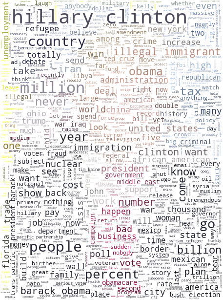
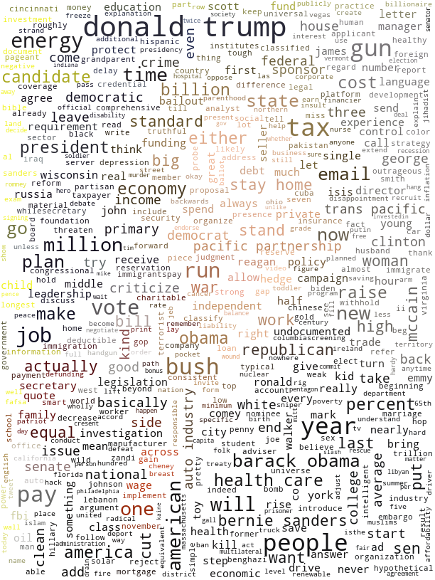
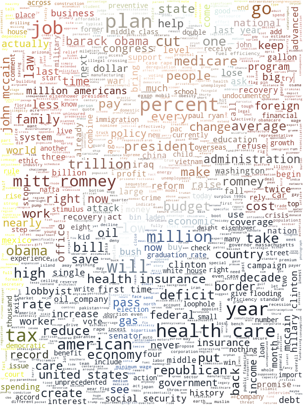

Introduction
Abstract
The creation and propagation of false information has existed since the dawn of time. Political or financial intentions are often hidden behind these misleading elements in order to gain credit or make competitors lose. With the emergence of the Internet and the ever-faster and more direct flow of information, it is becoming easier every day to deceive your fellow citizens and to be fooled. The term fake news took on a new dimension during the 2016 American presidential election, when Donald Trump used it extensively to describe the media coverage about himself. In this instantaneous era, it becomes crucial to be able to be critical of the information we receive. With this work, we want to highlight the risks related to the propagation of false information by using fake news themselves extracted from the Liar database. The power of fake news lies in the ears of the beholder and in crowds’ willingness to to doubt and believe. Our credulity becomes credibility, so it's up to us to turn the equation the other way around!
The database
For this study we used the Liar database introduced by William Yang Wang in his article: Liar, Liar Pants on Fire: A New Benchmark Dataset for Fake News Detection.
This database was originally built to automatically detect fake news using data collected by the Politifact.com website.
Following the example of this dataset, we have also collected thousands of up-to-date data from Politifact.com.
This huge data collection allows us to better understand the world of lies.
Each line corresponds to a unique quote whose veracity has been assessed and identified by a Politifact contributor.
A lot of information can be accessed in addition to the quotation itself, such as the speaker's political affiliation, geographical origin, history in the database, subject, etc...
The database therefore contains a large part of text elements of varying sizes. For example :
- Speaker: Donald Trump
- Context: Presidential announcement speech
- Label: Pants on Fire
- Justification: According to Bureau of Economic Analysis and National Bureau of Economic Research, the growth in the gross domestic product has been below zero 42 times over 68 years. Thats a lot more than "never". We rate his claim Pants on Fire!
- Speaker: Nancy Pelosi
- Context: on "Meet the Press"
- Label: False
- Justification: Even the study that Pelosi's staff cited as the source of that statement suggested that some people would pay more for health insurance. Analysis at the state level found the same thing. The general understanding of the word "everybody" is every person. The predictions dont back that up. We rule this statement False.
The scale of the original database has no precedent for fake news detection! 12.8k articles were analysed and labelled for the Liar dataset.
We have also collected data from Politifact.com in decreasing order since November 2018, to gather a dataset of more than 15k statements! It will therefore be possible to study in depth the worrying phenomenon of fakes news. The truth-O-meter can take six possible values depending on the degree of truth empirically evaluated by a Politifact contributor.
These six labels means the following (from Politifact.com)
- True – The statement is accurate and there’s nothing significant missing.
- Mostly True – The statement is accurate but needs clarification or additional information.
- Half True – The statement is partially accurate but leaves out important details or takes things out of context.
- Barely True or Mostly False - The statement contains an element of truth but ignores critical facts that would give a different impression.
- False - The statement is not accurate.
- Pants on Fire - The statement is not accurate and makes a ridiculous claim.
Some important notes on this study
We are here in the case of an observational study. This means that we do not have the power to influence the experiment and its sampling.
In particular, many precautions must be taken to draw broad conclusions from these data. Several sources of bias can be observed here.
Since the data is extracted from the politifac.com website, sampling can also be subject to a selection bias from the users responsible for verifying facts.
Our study
Even conditionned by this database, we can still study the phenomenon of fake news.
This study will be conducted in three parts.
- I. The Fake News Menace. In this section, we will study the rise of fake news over time and some interesting distribution properties.
- II. The Fake War. In this section, we will study the relationship between liars and the subject they like to lie about
- III. The Revenge of the Liar. In this section, we will study famous politicians and try to understand where they lie and what they lie about.
I. The Fake News Menace
The increase in the number of fake news is worrying. It may be interesting to observe and understand this phenomenon. In this section, we will observe the context in which the number of fake news has evolved. Is the number of fake news really increasing, or is it a misperception ?
The Evolution
Influencers have always used lies or distortions of reality to express ideologies and convince their audience. Some people think that the use of these manipulation techniques is increasingly being used. The following graph represents the evolution of the number of false information relayed by the PolitiFact site
Evolution of the percentage of false informations over time
First, it can be noted that there does not seem to be a clear increase in the number of fake news in the time domain of the database. It is important to note that the number of false information is on average 50% of the total information. The false and the true are in a constant battle. Since 2017, when Donald Trump came into power, falsification of information seems to be gaining ground on its opponent, which can be worrying.
Speaking of politics, let's see if there is a difference between the Republican and the Democratic parties.
Evolution of the percentage of false informations over time between democrats and republican
The red curve represents the lie proportions of the republican, and the blue the lie proportions of the democrats.
We can observe that the lie rate of both American parties doesn't seems to follow any trend. It must be said that the Republican Party produces much more lies than the Democratic Party.
Interesting distribution
Which subjects collect the most lies? Where do lies spread the most?
Our database allows us to answer this kind of question. It is then interesting to look at distributions of veracity on different features.
Percentage of false and true information about the most popular subject
The yellow bar represents the lie proportions, and the grey the truth proportions.
The subjects with the highest lie rate are the subjects where the opinions between Democrat and Republican are the most divergent.
For example, immigration and health insurance (Obama care) where the most lies have emerged.
Then, for exemple, we can be interested by looking at the media where the most lies are propagated.
We can therefore project the truth distribution on the context of each statements.
Percentage of false and true information in different media
The yellow bar represents the lie proportions, and the grey the truth proportions.
Tweeter (and social medias in general) are formidables way to propagate lies mostly because everybody can access to them and have a voice. Advertissement have also a lot of lies which is not a surprise for anybody.
We now have a sense of our data and the features that are present in it.
In the following section, we create a model that encompass the struture of the data and the relationship between individuals.
II. The fake war
III. The revenge of the liar
Words are arrows that we use daily to reach our targets. While they often leave us indifferent, they sometimes reach our hearts and influence our behaviour. In front of our eyes or inside our ears, they dictate our decisions. Politicians have long understood the importance of communication, and in this section we will look behind the scenes. What are the subjects on which we are most mistaken? What are the words and strategies used to achieve their political goals? Because no, not everything is true.
Tell me what you lie about and I will tell you who you are
Even if he tries to hide his lies with various strategies, the liar always leaves traces that allow us to catch him. The liar's DNA lies in the words he uses. Like fingerprints, the vocabulary, people or subjects that liars target often leave no doubt about their sources. Using the Liar database, it was possible to determine which words are most often used in the lies of leading American political figures. They reveal the main objectives of their program, their main opponents as well as their communication strategies. But who is hiding behind these lines? Who is it? Make your bet, and move the mouse over the image of your choice to check your suggestion!

The youngest child of a Wyoming farming family, he has nourished a passion for nature and ecology since a very early age. A graduate in agronomy and rural development, it was thanks to his fight for women's rights that he entered the political arena.

Specialist in digital security issues and self-taught, she entered the world of politics which she had until then denigrated following her involvement in the "White Hats" movement. She recently appeared in an episode of the hit TV show Miss Robot.

Son of a family of artists, he regularly rubs shoulders with the stars of Broadway's hit musicals. In constant hesitation between his passion for jazz and theater, he eventually chose to dedicate himself to stand-up shows comedies. Before his election, he was the producer and host of the successful talk show Drop The Mic.
Note
The visualisation above was made after extracting all the sentences that contain false information by each speaker. We used an NLP pipeline to process the obtained text in order to extract the most frequent words (lemmas) used by a speaker. The higher the frequency of a given word, the bigger the text is displayed. Note that the analysis was made per speaker. Beware when comparing two speakers: this image tells us about the differences in the words that they lie about, but the size of the words cannot be compared between speakers.
What do they mostly lie about ?
We now know who we will have to deal with in the rest of this analysis: the last two candidates in the American presidential election, Hillary Clinton and Donald Trump, now 45th President of the United States, and his predecessor Barack Obama. If we look in more details, on which subjects do they lie the most according to PolitiFact, and in what proportion?
The visualizations on the right represent the distribution of the number of lies within the 10 subjects most often found in a speaker's interventions. In general, it is observed that interventions that are reported false by Politifact are linked to the flagship measures of the speakers who broadcast them.
For example, Barack Obama's first three categories of lies are health, economics and budget, which were highly topical issues in his political messages. The famous Obama Care and related measures have certainly generated a wave of information that has turned out to be false. These subjects, mainly of a social and economic nature, also reflect the political line of the Democratic Party, intertwined with the health issue raised by President Obama throughout his term in office.
As for Donald Trump’s key lies, they also correspond to the subjects that led him to run for president in November 2016. Generally speaking, security issues are widely represented. Immigration is the spearhead of the lies revealed by the business man who became president. It is followed by foreign policy and a variety of subjects that match his USA-centered political campaign. There is also a large component related to the biographies of the other candidates, which are part of a misinformation strategy used to discredit his opponents.
As for Hillary Clinton, this mosaic shows a pattern closer to her Democratic predecessor, where socio-economic issues are most prevalent. Interestingly, we observe a high score of lies linked to the biographies of other candidates, which may hint a matching of strategy with that of the elected candidate, Mr Trump.

In general, we observe that the most represented subjects for each of the speakers are those who get them elected. However, there is a logic to these results, given that it is more frequent to talk about the key themes of one's electoral program, and therefore to lie about them.
The figure on the left now represents the lies of the same three speakers on the subjects most represented in the lies of the entire database, all speakers combined. It contains the similarities mentioned above between Obama and Clinton about the economy or between the two candidates Clinton and Trump about their respective biographies. We can also observe the privileged subjects of lies of each of the speakers. Again, we must keep in mind the bias of our database, which only reveals what its creators have decided to include in it.
Sentiment analysis
Just as there are many subjects to lie about, there are also many ways to do it. Are the quotes revealed as false rather positive, negative or neutral? What are the feelings that speakers use to disclose their lies? With the help of the Vader-Sentiment Analysis tool, we were able to quantify the sentimental polarity of sentences noted as false. In general, the vast majority of speakers have a relatively high rate of sentences categorized as neutral (~40%). However, at the individual level, some notable differences appear. If Donald Trump seems to lie by using negative (36%) versus positive (22%) sounding sentences, this trend is reversed when we look at Barack Obama's distribution (28 VS 35%). It can be noted that the algorithm used for this analysis is rather suitable for the analysis of data from social networks, and may not be appropriate for this type of analysis, explaining the high rate of neutral feelings and the small differences between the different speakers.
Remerciements
This study would not have been possible without the tremendous work done by Politifact and later by William Yang Wang. Separating what is true from what is false is not always easy, and the energy required to do so and to alert fellow citizens about it is enormous. A huge thank you for making a ready-to-use study topic available, and with it the many “rire jaunes” that have punctuated our work .